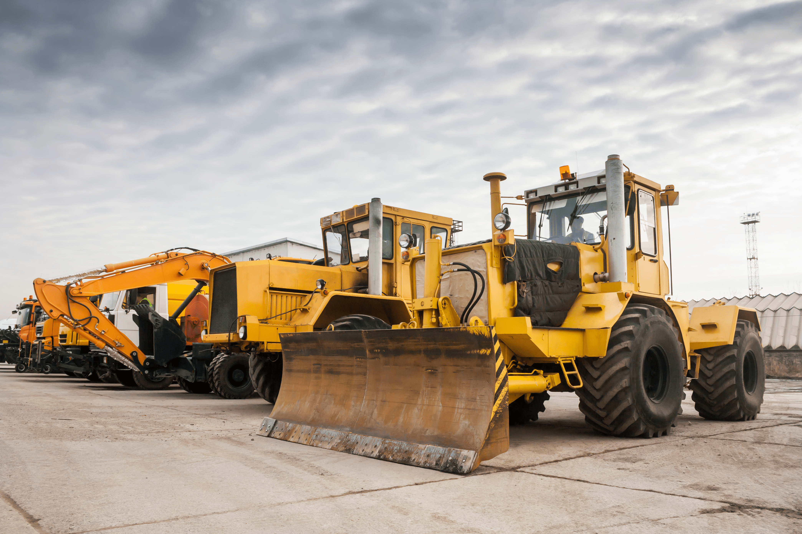

Several Benefits of GPS Tracking on Equipment
1
2
3
4
5
Tracking / Geofencing
A lot of heavy equipment is valuable and difficult to
replace. With OneStep GPS tracking services for heavy
machinery, trailers and other high-value assets, you can
keep an eye on your assets’ location at all times.
You can also set up geofencing, an invisible boundary that sends a notification when the equipment leaves the preset perimeter. This information is crucial to ensuring that equipment is precisely where it needs to be.
You can also set up geofencing, an invisible boundary that sends a notification when the equipment leaves the preset perimeter. This information is crucial to ensuring that equipment is precisely where it needs to be.

Easily Monitor Equipment Maintenance Schedules
GPS tracking has significantly improved maintenance
management by leveraging its automated processes to
track hours of operation/engine hours and set automatic
maintenance alerts so that care is done on time.
There is also advanced reporting to help plan for downtime.
There is also advanced reporting to help plan for downtime.

Preventing Theft / Relocating Stolen Equipment
The benefits of having a precise location for your
equipment when it comes to helping authorities catch the
thieves are clear. However, the right rental equipment
tracking devices can do more than aid in locating a lost
or stolen rental asset—it can help you minimize the risk
of damage to the equipment if it is stolen by reducing
the time that thieves have it.
For example, use a GPS tracking device for equipment that features motion detection capabilities. It will instantly generate an alert if the device is moved “after hours.” Helping to quickly identify a potential theft in progress and alert the authorities to the robbery minimizing the time it takes for police to find and catch the thieves—reducing the likelihood that the equipment will be damaged or disposed of before authorities can see it.
For example, use a GPS tracking device for equipment that features motion detection capabilities. It will instantly generate an alert if the device is moved “after hours.” Helping to quickly identify a potential theft in progress and alert the authorities to the robbery minimizing the time it takes for police to find and catch the thieves—reducing the likelihood that the equipment will be damaged or disposed of before authorities can see it.
Preventing Unauthorized Usage
Employing GPS tracking can prevent equipment use during
off-hours, prevent equipment from being moved out of the
authorized job or zone, and prevent basic maintenance
requirements from being missed.
These unauthorized activities place additional risks on the equipment, increasing potential theft and failure. Without GPS equipment tracking, they can be hard to prove.
GPS tracking systems can help you track information such as equipment activation times, engine statistics, locations, and more.
These unauthorized activities place additional risks on the equipment, increasing potential theft and failure. Without GPS equipment tracking, they can be hard to prove.
GPS tracking systems can help you track information such as equipment activation times, engine statistics, locations, and more.

Improving Data and Reporting
With this data, you can optimize your equipment
maintenance scheduling with ease as your equipment nears
specific maintenance milestones. This helps to reduce
maintenance costs by focusing on preventative
maintenance rather than costlier emergency
maintenance—which also helps improve equipment ROI.


 Chat with us
Chat with us